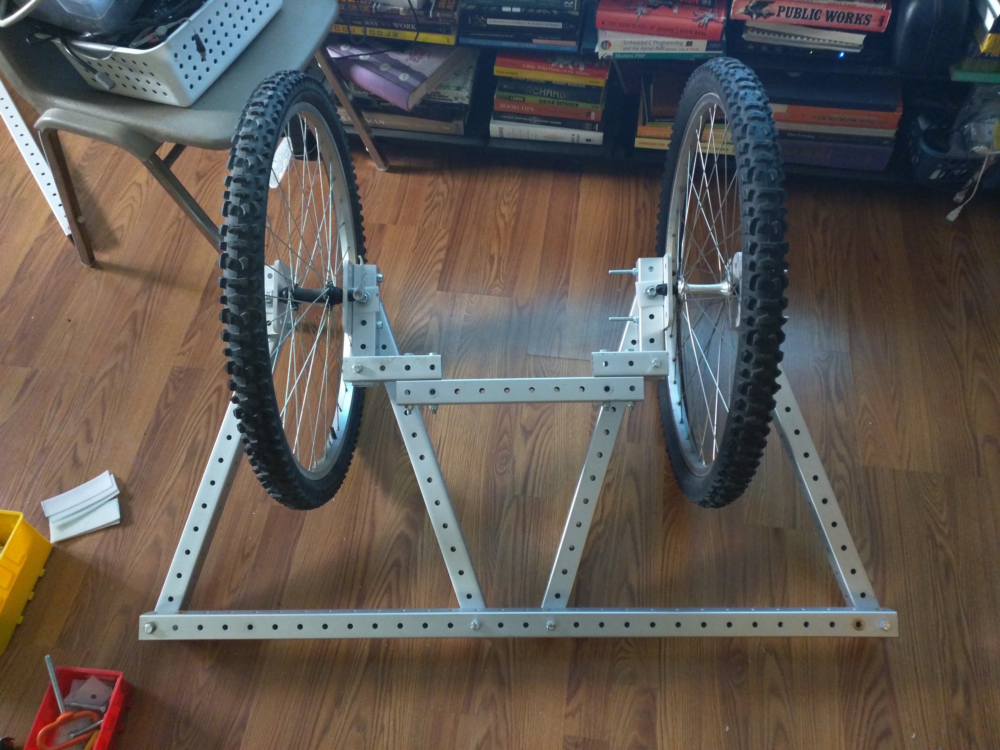
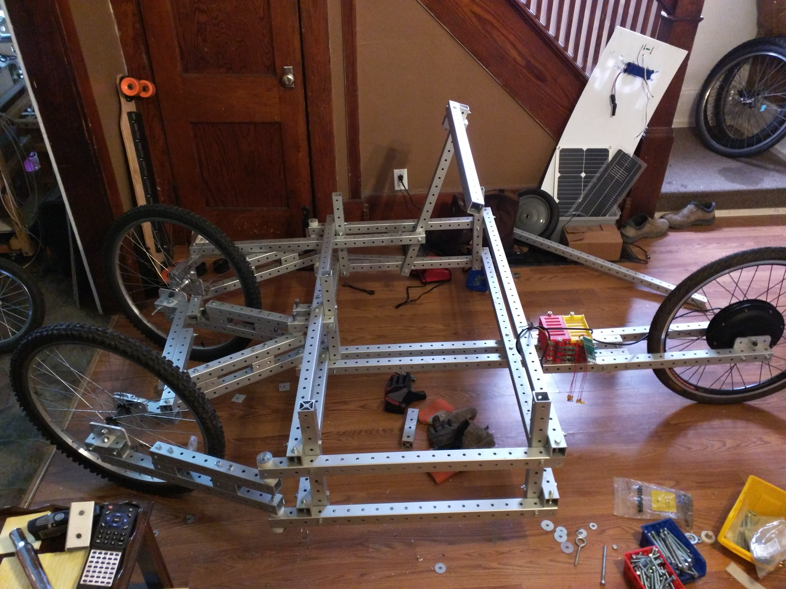

trapezoidal steering revision 5052
^ Techniques infobox ^^
| image | EFSW-cart-2.jpg |
| designer | [[user:tim|Timothy Schmidt]] |
| date | 2018 |
| parts | [[frames|Frames]], [[bolts|Bolts]], [[nuts|Nuts]], [[end_caps|End caps]] |
| techniques | [[bolting|Bolting]], [[live_hinges|Live hinges]] |
| tools | [[wrenches|Wrenches]] |
| git | |
| stl | |
Introduction
Challenges
Approaches

